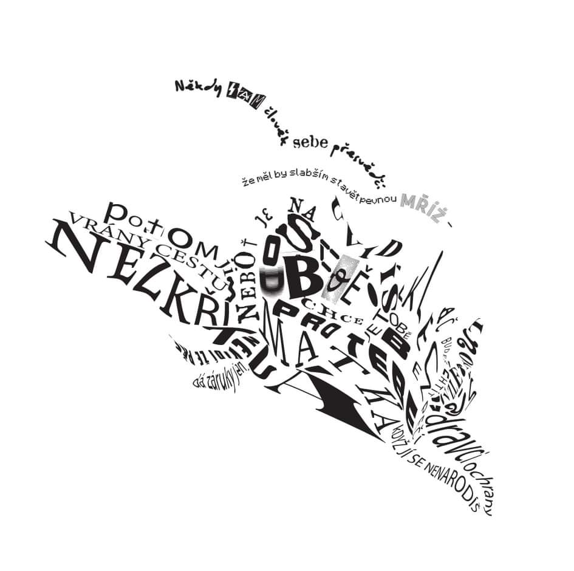
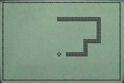
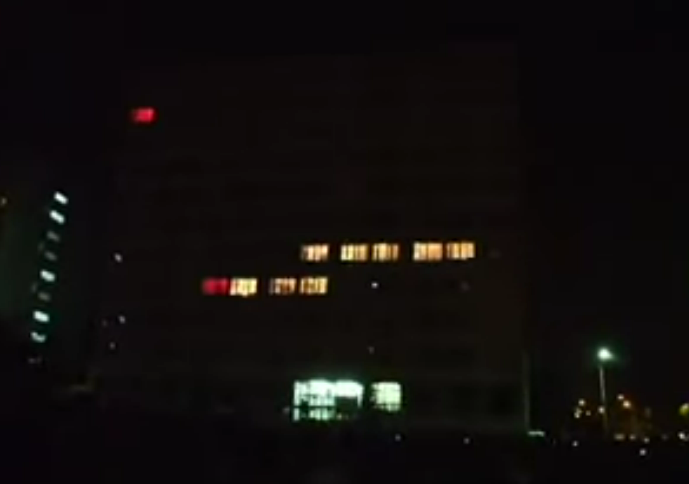

Martin Kubeša
Zdravím, jmenuji se Martin Kubeša a hledám dívku.
...
Ne, asi by bylo fajn se nějak představit. Studuju bezpečnost na FITu, takže při zmínění slov "soukromí" a "internet" v jedné větě můžete očekávat mé škodolibé úsměvy. Nicméně, vedle toho mě baví psát poezii, skládat písně na kytaru a pokoušet se při tom o něco, čemu by člověk ve frontě na operaci ušních bubínků mohl říkat zpěv.
Ukázka poezie:
Kaligram by Eliška Milfaitová:
Taky mě baví debatování o všem možném, především debunkování pseudovědy, náboženství a anarchokapitalismu, ale stavím se rád i do role obhájce pozic, se kterými nesouhlasím. Jordan Peterson by mě tak asi nazval svým oblíbeným oxymorónem jako postmoderního neomarxistu.
Přezdívku Zmatené Sluníčko jsem si vysloužil po zaslání své parodie Všech Vlastenců Mešita (Ortel - Mešita) na všechny (ne)myslitelné protiislámské stránky.
Více tu: Wattpad
a tu: YouTube
Umění mě baví, ale trpí spolu se mnou na chronický nedostatek času. Leč by zlí jazykové mohli tvrdit, že neexistuje "nemám čas", existuje jen "není to dostatečně vysoko v mém žebříčku priorit," přeci jen bych asi chtěl vystudovat a podobné nutnosti pro to, abych měl na umění čas i peníze. Takže, časem snad čas bude. A v čase relativně blízkém snad i projekt, který bych chtěl realizovat v rámci NI-CCC. Jaký?
To se dozvíte až po reklamě!
Zdroj: tu
:format(jpeg)/cdn.vox-cdn.com/uploads/chorus_image/image/53442651/nokia_snake_mwc_2017.0.jpg){kind=link}
Nokia: Connecting people Stealing the rest of your attention during classes
Jo, asi jsem nezmínil, že sbírám telefony a všelijak mě baví si s nima hrát. A býval jsem radikálním fanouškem Nokie, z čehož stále zůstala nějaká ta nostalgie. Snad dost silná na to, abych v rozumném čase převedl tohle:
na tohle:
A nyní, praktikálie.
Nápad:
- použít okna vybrané budovy jako displej
- naprogramovat například (preferovaně) hada, nebo nějakou pěknou animaci
Problémy:
- Žárovky musí být schopny rozumné odezvy už z výroby, aby to lidské oko nepoznalo.
- Jak sehnat vhodnou budovu? Ideální je nějaká panelákovitého tvaru, ale asi se dá improvizovat. Podstatné je, aby šlo odstínit okno od okna a jedna žárovka tak neosvětlovala okno vedle. A taky, aby poskytovala dost oken=pixelů, na kterých má smysl cokoli realizovat.
- Jak propojit žárovky tak, aby se daly ovládat z jedné sítě? Vyžaduje nejspíš hodně síťových prvků - základní router a hromada (neznámo kolik, třeba ozkoušet) opakovačů pro spolehlivost - nejde, aby žárovka v posledním patře měla slabý signál a rozsvěcela se podle nálady/se zpožděním. Implementace bude záviset na charakteristice budovy (počet opakovačů a jejich potřebný výkon vhodný pro přenos skrze stěny atd.).
- Programování. Žárovky by měly být ideálně schopny přijímat nějaké jednoduché instrukce přes síť, aby nad tím šlo vystavět jednoduchý engine na „vykreslení displeje” a následně pak zvolený program. Předpokládám, že na ovládání pak netřeba microcontroller, pokud půjde o jednorázovou akci, ale stačí vše ovládat z pohodlí obyčejného laptopu.
- Současně bude potřeba vyřešit, aby každá konkrétní žárovka dostala fixní IP adresu (například na základě její MAC adresy), pro snadnou identifikaci, o jaké žárovce se bavíme.
- Ohledně sítě ještě, ideální by bylo, kdybychom už zajistili protokol komunikace, který je spolehlivý.
Pozn.: Grafika je obvykle implementovaná tak, že máme nějaký cyklicky opakovaný příkaz, co přijme na vstupu 2D mřížku (2D pole) s konkrétními barvami a každému „pixelu” na konkrétní pozici řekne, jakou barvou/intenzitou/... se má rozsvítit, či zda má zcela zhasnout. Pokud se změní například pozice hada, změní se i zmiňovaná mřížka, která je třeba každou 1/10 vteřiny vysílána této funkci „vykresli”.
Co už je nejspíš jisté:
- budou použity chytré wi-fi led žárovky, pravděpodobně RGB
- jako budova se nabízí Camp, jako komplexní řešení 1., 3., 4., 5., 6. se nabízí použít systém DMX
V nejbližší době se tedy budu muset naučit nějaké základní příkazy pro ovládání DMX, abych nad tím mohl postavit nějaký základní vykreslovací engine.
Contact
- Discord: ZS57683 h4sh 8303